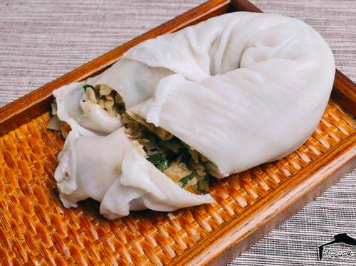
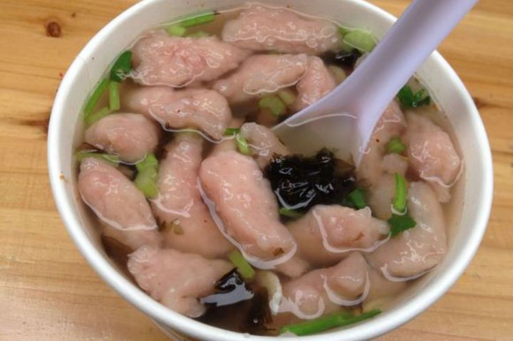
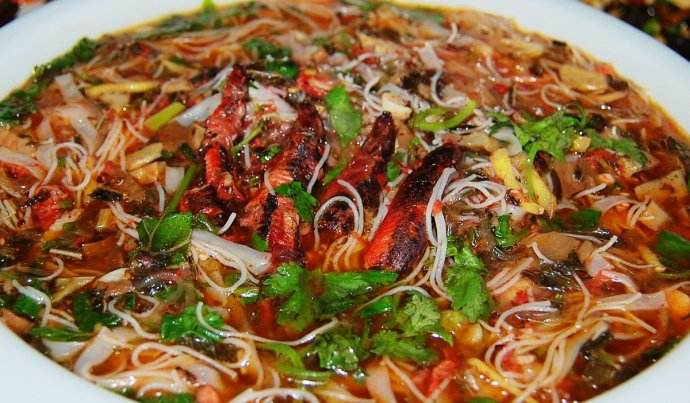
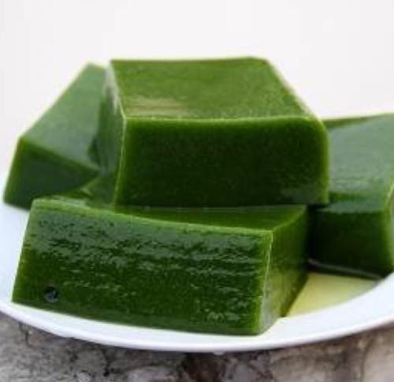
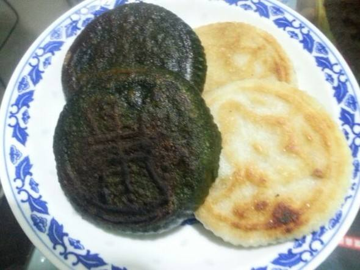

交易市场
首页
特长
登录\注册
为在外地的人提供一个平台，品尝家乡的味道
产品介绍

米面层
由米粉兑水后放到专用蒸具中的薄片中包着四季豆、萝卜、猪肉等做成的。是泰顺人与来泰顺旅游的人们喜爱的美食，也是泰顺人最喜爱的早餐。不同的做法还可以呈现出与众不同的美食。

瘦肉丸
风靡温州街头的美味小吃瘦肉丸（丽水地区也有这种 很传统），也称瘦肉羹，细长的肉羹划入滚烫的水中，立即浮上来，洁白而略微红，味道鲜美，很有嚼劲，汤汁澄清美味，略带酸辣味。放入紫菜、榨菜丝、虾皮、葱花、香菜粒，鲜香俱全、美味可口。

泥鳅汤
原材料多包括新鲜泥鳅、土豆丝、米线、菜干、辣椒等。做法是用油喂养鲜活泥鳅一两小时，说是去除体内泥污，去油后加少量清水，佐料还可加红酒糟、茴香、桂皮、姜、蒜等，文火慢熬即得。

绿豆腐
俗称“豆腐柴”。制作原材料是一种野生灌木，这种灌木在浙南闽北一带的山野里虽不能说是满山遍布，但也算是常见之物，当地人称之为豆腐柴。有清热解毒功能，是盛夏防暑降温的佳料，是纯真的自然绿色食品，是提取果胶的好资源。
三杯香
三杯香采摘于清明前后，因冲泡三次后仍有余香而成名。

清明糕
清明菜糕是一道以]鼠曲草嫩苗、米粉、白糖等为主要食材制作的点心。